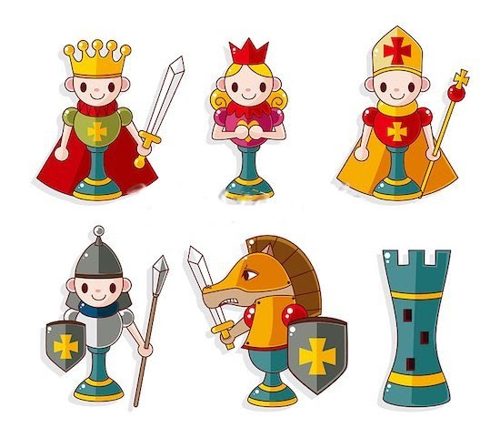

El rey, la dama, la torre, el alfil, el caballo y el peón se mueven sobre el tablero cada uno a su modo. Por lo tanto es necesario aprender sus seis maneras distintas de moverse .
Las piezas se dividen, por convención, en blancas y negras. A los jugadores se les conoce como "Blanco" y "Negro", y cada uno comienza el juego con dieciséis piezas de su color. Estos consisten en un rey, una reina, dos torres, dos alfiles, dos caballos y ocho peones.
Nunca llames "fichas" a tus piezas porque se ofenderían gravemente, no estás jugando al parchís.
Cada pieza de ajedrez tiene su propio estilo de movimiento. En los diagramas las X marcan las casillas en donde la pieza se puede mover si no hay otras piezas (incluida una pieza propia) que se interpongan en su camino.
Si hay una pieza del adversario en la casilla de destino, la pieza es capturada. La única excepción es el peón, que sólo puede capturar las piezas en diagonal hacia adelante.
|